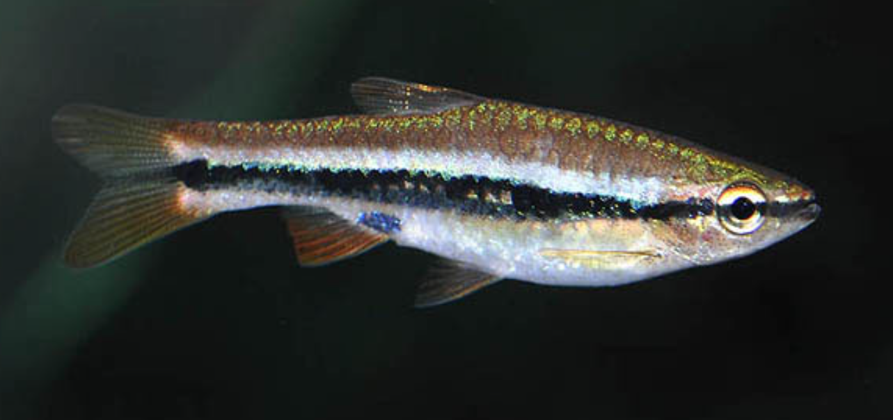
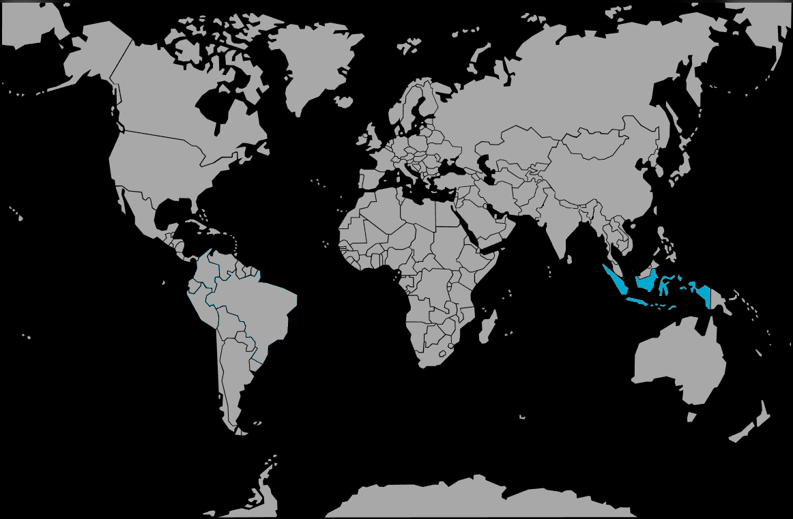

Systématique
- Ordre : Cypriniformes
- Famille : Danionidae
- Genre : Rasbora
- Espèce : R. patrickyapi

Rasbora patrickyapi est une espèce décrite assez récemment (2009) par le Dr Tan Heok Hui. Il a été nommé en l'honneur de Patrick Yap Boon Hiang, un exportateur de poissons qui a contribué à la recherche scientifique.
Ce poisson mesure environ 5 à 6 cm. Il ressemble beaucoup à Rasbora einthovenii ou à un jeune Rasbora kalochroma qui aurait des lignes plutôt que des taches. Il possède une bande noire latérale continue qui traverse tout le corps, du museau à la queue.
Sa particularité réside dans ses reflets : une iridescence violette ou pourpre peut être observée sous un bon éclairage, et ses nageoires sont teintées de rouge, surtout chez les mâles dominants.
C'est un poisson grégaire et paisible, qui doit vivre en banc de 8 à 10 individus minimum. Isolé, il est craintif.
Il est actif et nage principalement en pleine eau. Il convient bien aux aquariums communautaires reproduisant un biotope d'Asie du Sud-Est (avec des gouramis, des loches, etc.), à condition que les paramètres d'eau (douce et acide) soient respectés.
Mode : ovipare (diffuseur d'œufs).
Comme la plupart des Rasboras, les parents dispersent leurs œufs parmi les plantes fines et ne s'en occupent pas. Ils ont même tendance à manger leur propre ponte.
La reproduction est délicate et nécessite une eau très douce, acide (pH 5.0-6.0) et ambrée (tanins) pour stimuler la ponte et assurer la survie des œufs, qui sont sensibles aux bactéries et aux champignons.
Dimorphisme sexuel : Les mâles sont plus élancés et présentent des couleurs plus vives, notamment au niveau du rouge des nageoires. Les femelles sont plus ternes et ont un abdomen plus rebondi lorsqu'elles sont gravides.
Espérance de vie : Environ 3 à 5 ans.
Il est endémique de l'île de Bornéo, plus précisément de la province du Kalimantan central (Indonésie).
Il vit exclusivement dans les marais tourbeux et les ruisseaux d'eaux noires ("blackwater") associés aux bassins des rivières Katingan et Kahayan. L'eau y est brune (couleur thé), très acide et très douce, avec un substrat de tourbe et de sable de silice.
Répartition

Origine naturelle :
- Asie du Sud-Est.
- Indonésie (Bornéo, Kalimantan Central).
- Bassins Katingan et Kahayan.
Paramètres de maintenance
Température : 23 à 28 °C.
pH : 4,5 à 6,5 (eau acide impérative).
GH : 1 à 8 °dGH (eau très douce).
Volume conseillé : Minimum 100 à 120 L, car c'est un bon nageur qui atteint 6 cm.
Régime alimentaire
Régime : carnivore / insectivore.
Dans la nature, il se nourrit de petits insectes et de zooplancton.
En aquarium, il n'est pas difficile et accepte les paillettes et granulés, mais une alimentation variée avec du vivant ou du congelé (vers de vase, artémias, daphnies) est essentielle pour maintenir ses couleurs et sa santé.